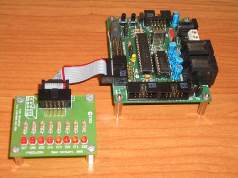

Hace poco que he empezado a colaborar en el projecto JDE, desarrollado por el grupo de robótica de la Universidad Rey Juan Carlos. Es una plataforma software para la realización de aplicaciones robóticas. Además es libre, distribuida bajo licencia GPL.
Mi intención es añadir a JDE dispositivos hechos con hardware libre. He comenzado por la tarjeta Skypic. La primera aplicación ha sido el diseño de un driver para JDE que permite a los esquemas encender leds (Sí, la famosa aplicación led-palanca😀):

La utilidad de este driver es aprender a conectar los esquemas de jde con la Skypic. Lo divertido viene luego: mover servos, controlar mis robots modulares, añadirles visión, etc. Pero quiero ir pasito a pasito.
A continuación pongo los enlaces de todo lo que se ve en el vídeo:
* Tarjeta skypic
* Tarjeta Freeleds
* Firmware
a grabar en la Skypic. Es el servidor eco, que además de hacer eco escribe
los bytes recibidos al puerto B, donde se conecta la Freeleds.
* Paquete con las fuentes del Driver Led8.
Es una versión preliminar “cutre”. Más adelante colgaré toda la información en el wiki.
Saludos, Obijuan
Hola,
Me interesaría conocer más sobre el proyecto JDE, ya que en su página web queda poco explicado.
Se podrían también basar las librerías de la Entrenadora que estaba haciendo en la wiki de ARDE.
Hola Ranganok,
El JDE (Jerarquía dinámica de Esquemas) se utiliza para implementar comportamientos en robots móviles. La semilla del proyecto la puso Jose María Cañas (el director del grupo de robótica de la URJC) con su tesis doctoral en el 2003.
Puedes encontrar abundante información sobre ello:
* Manual de JDE
http://jde.gsyc.es/index.php/Manual
* Publicaciones (te recomiendo la tesis de Jose María):
http://jde.gsyc.es/index.php/Publications
* Transparencias:
En este enlace encontrarás muchas:
http://gsyc.es/jmplaza/publications.html#talks
Te recomiendo la que dió en Sicfima 2007, en la UPM
http://gsyc.es/jmplaza/activities/charla-sicfima2007.pdf
* Docencia:
El JDE lo usan para la asignatura de introducción a la robótica:
http://gsyc.escet.urjc.es/moodle/course/view.php?id=11
y el master:
http://gsyc.escet.urjc.es/moodle/course/view.php?id=23
Hola,
Gracias por los enlaces, me los tendría que mirar con calma que hay mucha información.
S2
Ranganok Schahzaman